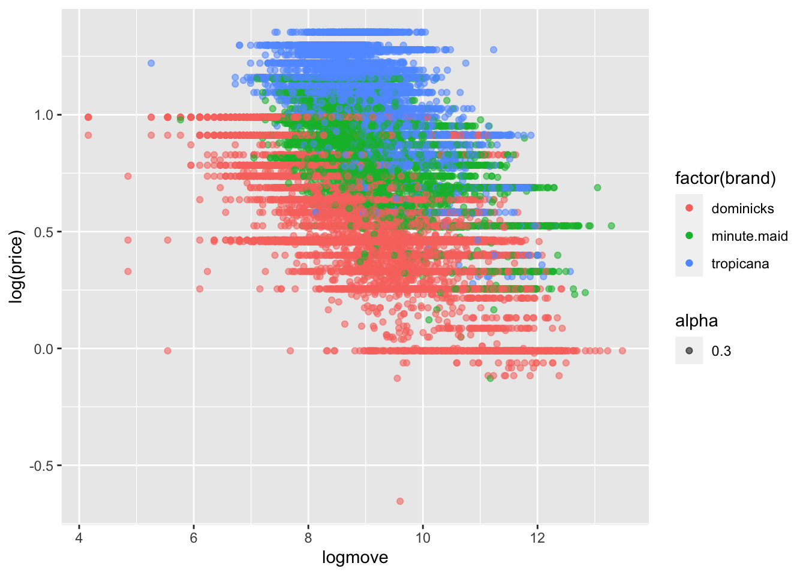
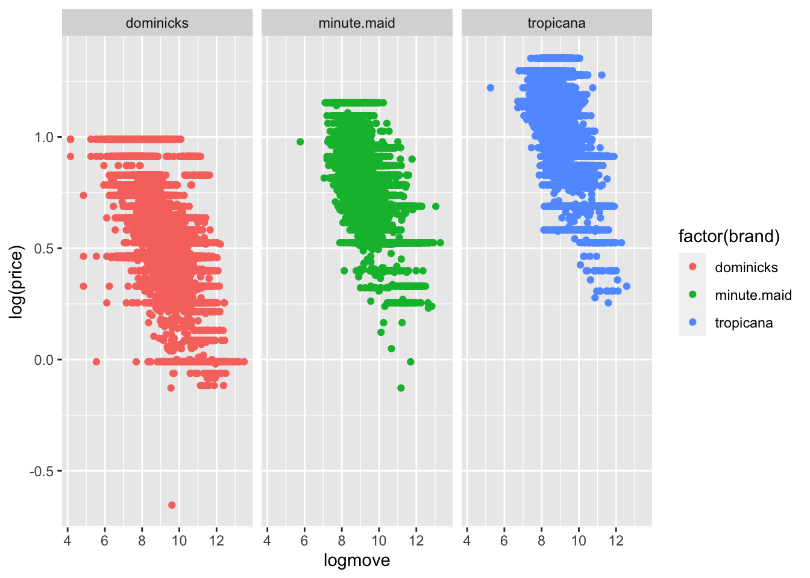

setwd("/Users/lesleyxu/Desktop/Past courses/23AU/ECON 487")
oj <- read.csv("oj.csv")HW2
Empirical Section
4) Visualizing price
- Make a box plot of price.
library(ggplot2)
ggplot(oj, aes(factor(brand), price)) + geom_boxplot(aes(fill = brand))
- Make a box plot of log price.
ggplot(oj, aes(factor(brand), log(price))) + geom_boxplot(aes(fill = brand))
- Make a box plot of price, but separate out each brand.
ggplot(oj, aes(factor(brand), price)) + geom_boxplot(aes(fill = brand)) +
facet_grid(. ~ brand)
- Do the same for log price.
ggplot(oj, aes(factor(brand), log(price))) + geom_boxplot(aes(fill = brand)) +
facet_grid(. ~ brand)
- What do these graphs tell you about the variation in price? Why do the log plots look different? Do you find them more/less informative?
- The graphs tell me that the prices distribution of dominicks is lowest among the three brands, and tropicana is the highest among those three. Comparing to the original plot, the log plots has all the outliers in the lower bound. When graph the log plots, the data is compressed, causing the effect of spreading out values that were concentrated in the lower range and pulling together values that were widely dispersed in the upper range. Therefore the outliers in the original data become less prominent, and the distribution can appear more symmetrical. The log plot provides more information because the data points are standardized, making it easier for me to compare these three brands in the same scope while keeping the pattern of left-skewed, right-skewed and right-skewed.
5) Visualizing the quantity/price relationship
Plot logmove (log quantity) vs. log(price) for each brand. For this one the appropriate second part of the ggplot command will be:
+ geom_point(aes(color = factor(var_name)))- What do insights can you derive that were not apparent before?
- The scatterplot tell me a negative correlation between logmove and log(price): as loge move increases, log(price) decreases. The scatterplot also shows a possible linear relationship between logmove and log(price).
ggplot(oj, aes(logmove, log(price), alpha = 0.3)) + geom_point(aes(color = factor(brand)))
ggplot(oj, aes(logmove, log(price))) + geom_point(aes(color = factor(brand))) + facet_grid(. ~ brand)
6) Estimating the relationship.
- Do a regression of log quantity on log price (you can use the lm or glm function to do this). How well does the model fit? What is the elasticity, does it make sense?
reg1 <- lm(logmove ~ log(price), oj)
reg1_sum <- summary(reg1)
reg1_sum
Call:
lm(formula = logmove ~ log(price), data = oj)
Residuals:
Min 1Q Median 3Q Max
-5.0441 -0.5853 -0.0330 0.5756 3.7264
Coefficients:
Estimate Std. Error t value Pr(>|t|)
(Intercept) 10.42342 0.01535 679.04 <2e-16 ***
log(price) -1.60131 0.01836 -87.22 <2e-16 ***
---
Signif. codes: 0 '***' 0.001 '**' 0.01 '*' 0.05 '.' 0.1 ' ' 1
Residual standard error: 0.9071 on 28945 degrees of freedom
Multiple R-squared: 0.2081, Adjusted R-squared: 0.2081
F-statistic: 7608 on 1 and 28945 DF, p-value: < 2.2e-16- \(R^2\) for this model is 0.2081, which means 20.81% of the variations in the dependent variable (logmove) could be explained by the independent variable (log(price)) in this model. The elasticity is -1.60131. Price elasticity measures the responsiveness of the quantity demanded of a product to a change in its price. The negative sign of the coefficient indicates an inverse relationship between price and quantity demanded, which makes sense. Besides, \(1<|-1.60131|<\infty\) means orange juice is elastic.
- Now add in an intercept term for each brand (add brand to the regression), how do the results change? How should we interpret these coefficients?
# dummy variables; log(price) change in elasticity
reg2 <- lm(logmove ~ log(price) + brand, oj)
reg2_sum <- summary(reg2)
reg2_sum
Call:
lm(formula = logmove ~ log(price) + brand, data = oj)
Residuals:
Min 1Q Median 3Q Max
-5.3152 -0.5246 -0.0502 0.4929 3.5088
Coefficients:
Estimate Std. Error t value Pr(>|t|)
(Intercept) 10.82882 0.01453 745.04 <2e-16 ***
log(price) -3.13869 0.02293 -136.89 <2e-16 ***
brandminute.maid 0.87017 0.01293 67.32 <2e-16 ***
brandtropicana 1.52994 0.01631 93.81 <2e-16 ***
---
Signif. codes: 0 '***' 0.001 '**' 0.01 '*' 0.05 '.' 0.1 ' ' 1
Residual standard error: 0.7935 on 28943 degrees of freedom
Multiple R-squared: 0.3941, Adjusted R-squared: 0.394
F-statistic: 6275 on 3 and 28943 DF, p-value: < 2.2e-16- The \(R^{2}\) increases from 0.2081 to 0.3941, which means more of the variations could be explained by the new model. The coefficient for log(price) means the elasticity of dominicks products, for every one-unit increase in the log(price), logmove is estimated to decrease by approximately 3.13869 units. the coefficient for brandminute.maid and brandtropicana means minute.maid and tropicana has a higher estimated logmove compare to dominicks when the price is held constant.
- Now figure out a way to allow the elasticities to differ by brand. Search “interaction terms” and “dummy variables” if you don’t remember this from econometrics. Note the estimate coefficients will “offset” the base estimates. What is the insights we get from this regression? What is the elasticity for each firm? Do the elasticities make sense?
# with logs = elasticities; log(price): elasticity of dominicks
# elasticity: quantity/price
reg3 <- lm(logmove ~ log(price) * brand, oj)
reg3_sum <- summary(reg3)
reg3_sum
Call:
lm(formula = logmove ~ log(price) * brand, data = oj)
Residuals:
Min 1Q Median 3Q Max
-5.4434 -0.5232 -0.0494 0.4884 3.4901
Coefficients:
Estimate Std. Error t value Pr(>|t|)
(Intercept) 10.95468 0.02070 529.136 <2e-16 ***
log(price) -3.37753 0.03619 -93.322 <2e-16 ***
brandminute.maid 0.88825 0.04155 21.376 <2e-16 ***
brandtropicana 0.96239 0.04645 20.719 <2e-16 ***
log(price):brandminute.maid 0.05679 0.05729 0.991 0.322
log(price):brandtropicana 0.66576 0.05352 12.439 <2e-16 ***
---
Signif. codes: 0 '***' 0.001 '**' 0.01 '*' 0.05 '.' 0.1 ' ' 1
Residual standard error: 0.7911 on 28941 degrees of freedom
Multiple R-squared: 0.3978, Adjusted R-squared: 0.3977
F-statistic: 3823 on 5 and 28941 DF, p-value: < 2.2e-16- The elasticity for dominicks is -3.37752, the elasticity for minute.maid is -3.32073, and the elasticity for tropicana is -2.71177. Those elasticities make sense because it matches the price and demand relationships of each individual brand.
7) Impact of “featuring in store”. The “feat” variable is an indicator variable which takes the value of one when a product is featured (e.g., like on an endcap display)
- What is the average price and featured rate of each brand? Hint: use group_by and summarise within dplyr.
library(dplyr)
mean <- oj %>%
group_by(brand) %>%
summarise(
average_price = mean(price),
featured_rate = mean(feat)
)
knitr::kable(mean)| brand | average_price | featured_rate |
|---|---|---|
| dominicks | 1.735809 | 0.2570215 |
| minute.maid | 2.241162 | 0.2885273 |
| tropicana | 2.870493 | 0.1662348 |
- How should incorporate the feature variable into our regression? Start with an additive formulation (e.g. feature impacts sales, but not through price).
reg4 <- lm(logmove ~ log(price) + brand + feat, oj)
reg4_sum <- summary(reg4)
reg4_sum
Call:
lm(formula = logmove ~ log(price) + brand + feat, data = oj)
Residuals:
Min 1Q Median 3Q Max
-4.7593 -0.4457 -0.0042 0.4306 3.2375
Coefficients:
Estimate Std. Error t value Pr(>|t|)
(Intercept) 10.27909 0.01451 708.22 <2e-16 ***
log(price) -2.52989 0.02172 -116.50 <2e-16 ***
brandminute.maid 0.68156 0.01177 57.91 <2e-16 ***
brandtropicana 1.30176 0.01483 87.78 <2e-16 ***
feat 0.89062 0.01046 85.13 <2e-16 ***
---
Signif. codes: 0 '***' 0.001 '**' 0.01 '*' 0.05 '.' 0.1 ' ' 1
Residual standard error: 0.7096 on 28942 degrees of freedom
Multiple R-squared: 0.5154, Adjusted R-squared: 0.5154
F-statistic: 7696 on 4 and 28942 DF, p-value: < 2.2e-16- Now run a model where features can impact sales and price sensitivity (e.g., the model we discussed in class).
reg5 <- lm(logmove ~ log(price) * feat, oj)
reg5_sum <- summary(reg5)
reg5_sum
Call:
lm(formula = logmove ~ log(price) * feat, data = oj)
Residuals:
Min 1Q Median 3Q Max
-5.2995 -0.4706 0.0198 0.4950 3.0765
Coefficients:
Estimate Std. Error t value Pr(>|t|)
(Intercept) 9.65926 0.01642 588.27 <2e-16 ***
log(price) -0.95823 0.01869 -51.27 <2e-16 ***
feat 1.71438 0.03041 56.38 <2e-16 ***
log(price):feat -0.97729 0.04190 -23.32 <2e-16 ***
---
Signif. codes: 0 '***' 0.001 '**' 0.01 '*' 0.05 '.' 0.1 ' ' 1
Residual standard error: 0.7911 on 28943 degrees of freedom
Multiple R-squared: 0.3977, Adjusted R-squared: 0.3977
F-statistic: 6371 on 3 and 28943 DF, p-value: < 2.2e-16- Now run a model where each brand can have a different impact of being featured and a different impact on price sensitivity. Produce the regression results for this regression brand with brand level elasticities.
reg6 <- lm(logmove ~ log(price) * brand * feat, oj)
reg6_sum <- summary(reg6)
reg6_sum
Call:
lm(formula = logmove ~ log(price) * brand * feat, data = oj)
Residuals:
Min 1Q Median 3Q Max
-4.8893 -0.4290 -0.0091 0.4125 3.2368
Coefficients:
Estimate Std. Error t value Pr(>|t|)
(Intercept) 10.40658 0.02335 445.668 < 2e-16 ***
log(price) -2.77415 0.03883 -71.445 < 2e-16 ***
brandminute.maid 0.04720 0.04663 1.012 0.311
brandtropicana 0.70794 0.05080 13.937 < 2e-16 ***
feat 1.09441 0.03810 28.721 < 2e-16 ***
log(price):brandminute.maid 0.78293 0.06140 12.750 < 2e-16 ***
log(price):brandtropicana 0.73579 0.05684 12.946 < 2e-16 ***
log(price):feat -0.47055 0.07409 -6.351 2.17e-10 ***
brandminute.maid:feat 1.17294 0.08196 14.312 < 2e-16 ***
brandtropicana:feat 0.78525 0.09875 7.952 1.90e-15 ***
log(price):brandminute.maid:feat -1.10922 0.12225 -9.074 < 2e-16 ***
log(price):brandtropicana:feat -0.98614 0.12411 -7.946 2.00e-15 ***
---
Signif. codes: 0 '***' 0.001 '**' 0.01 '*' 0.05 '.' 0.1 ' ' 1
Residual standard error: 0.695 on 28935 degrees of freedom
Multiple R-squared: 0.5354, Adjusted R-squared: 0.5352
F-statistic: 3031 on 11 and 28935 DF, p-value: < 2.2e-16- Now add what you think are the most relevant sociodemographic controls and produce the regression results from that regression as well.
reg7 <- lm(logmove ~ log(price) * brand * feat + AGE60 + EDUC + ETHNIC + INCOME + HHLARGE + WORKWOM + HVAL150 + SSTRDIST + SSTRVOL + CPDIST5 + CPWVOL5, oj)
reg7_sum <- summary(reg7)
reg7_sum
Call:
lm(formula = logmove ~ log(price) * brand * feat + AGE60 + EDUC +
ETHNIC + INCOME + HHLARGE + WORKWOM + HVAL150 + SSTRDIST +
SSTRVOL + CPDIST5 + CPWVOL5, data = oj)
Residuals:
Min 1Q Median 3Q Max
-5.2004 -0.3922 -0.0049 0.3786 2.9884
Coefficients:
Estimate Std. Error t value Pr(>|t|)
(Intercept) 13.143435 0.329622 39.874 < 2e-16 ***
log(price) -2.854302 0.036816 -77.528 < 2e-16 ***
brandminute.maid 0.092348 0.044158 2.091 0.03651 *
brandtropicana 0.772280 0.048102 16.055 < 2e-16 ***
feat 1.055010 0.036034 29.278 < 2e-16 ***
AGE60 2.044239 0.127506 16.032 < 2e-16 ***
EDUC 0.955931 0.101486 9.419 < 2e-16 ***
ETHNIC 0.643102 0.037229 17.274 < 2e-16 ***
INCOME -0.279937 0.033300 -8.406 < 2e-16 ***
HHLARGE -0.920092 0.230509 -3.992 6.58e-05 ***
WORKWOM -0.424559 0.146824 -2.892 0.00384 **
HVAL150 0.357561 0.041803 8.554 < 2e-16 ***
SSTRDIST -0.019979 0.001465 -13.634 < 2e-16 ***
SSTRVOL -0.055948 0.009768 -5.728 1.03e-08 ***
CPDIST5 0.064160 0.006289 10.203 < 2e-16 ***
CPWVOL5 -0.500272 0.025703 -19.464 < 2e-16 ***
log(price):brandminute.maid 0.753984 0.058086 12.981 < 2e-16 ***
log(price):brandtropicana 0.713983 0.053736 13.287 < 2e-16 ***
log(price):feat -0.405049 0.070053 -5.782 7.45e-09 ***
brandminute.maid:feat 1.131698 0.077495 14.603 < 2e-16 ***
brandtropicana:feat 0.746656 0.093353 7.998 1.31e-15 ***
log(price):brandminute.maid:feat -1.079118 0.115559 -9.338 < 2e-16 ***
log(price):brandtropicana:feat -0.989109 0.117302 -8.432 < 2e-16 ***
---
Signif. codes: 0 '***' 0.001 '**' 0.01 '*' 0.05 '.' 0.1 ' ' 1
Residual standard error: 0.6568 on 28924 degrees of freedom
Multiple R-squared: 0.5851, Adjusted R-squared: 0.5848
F-statistic: 1854 on 22 and 28924 DF, p-value: < 2.2e-168) Overall analysis
- Based on your work, which brand has the most elastic demand, which as the least elastic?
elastic_d <- reg3_sum$coefficients[[2]]
elastic_t <- reg3_sum$coefficients[[2]] + reg3_sum$coefficients[[6]]
elastic_m <- reg3_sum$coefficients[[2]] + reg3_sum$coefficients[[5]]- Dominicks has the most elastic demand, tropicana has the least elastic demand.
- Do the average prices of each good match up with these insights?
- Tropicana has the highest average price, therefore the least elastic demand.
- Take average prices for each brand. Use the elasticity pricing formula (you can use average values from your analysis above) to “back out” unit costs for each brand. Do the unit costs appear to be the same or different? What are your insights/reactions?
\[-\frac{1}{\epsilon} = \frac{P-MC}{P}\] \[MC_{\text{dominicks}} = 1.735809- \frac{1}{-3.37753} \cdot 1.735809 = 2.249737\] \[MC_{\text{minute.maid}} = 1.735809- \frac{1}{-3.32073} \cdot 1.735809 = 2.258528\] \[MC_{\text{tropicana}} = 1.735809- \frac{1}{-2.711769} \cdot 1.735809 = 2.375911\] - Tropicana has the highest unit cost, it matches my insight from previous section (higher average price because of higher unit cost). Such result implies that the consumers of tropicana might be more loyal than dominicks and minute.maid.